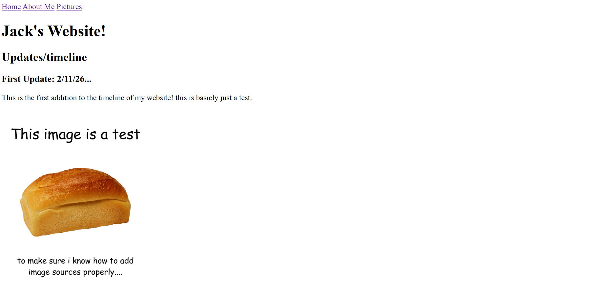
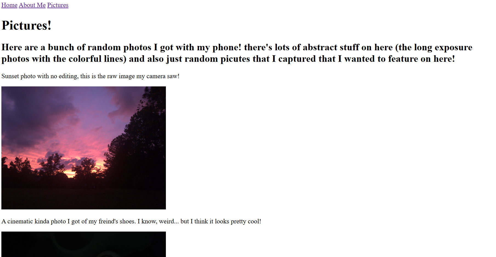
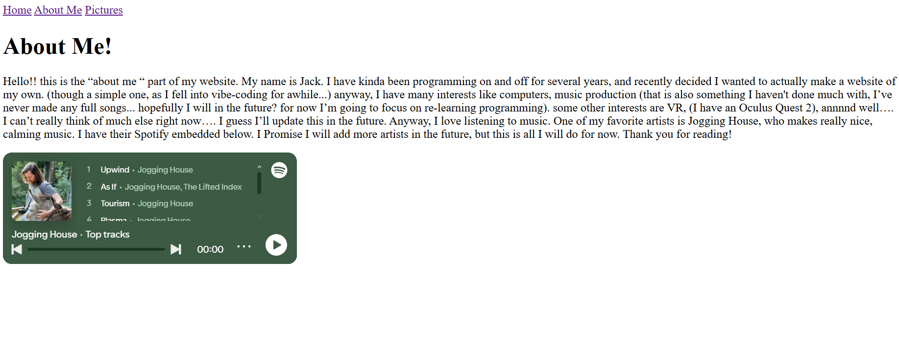
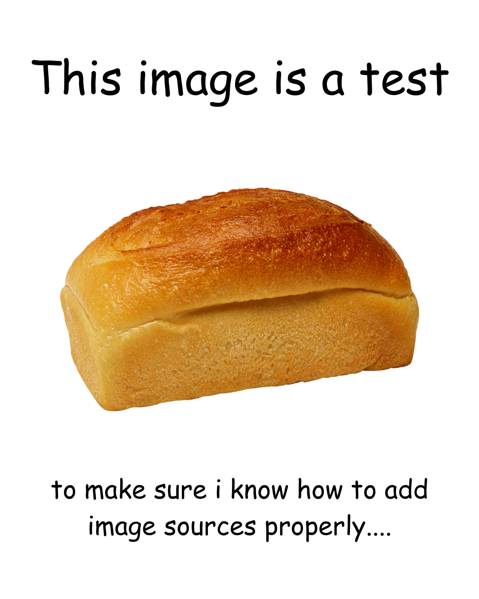

Third Update: 2/12/26...
The barebones version of the site is now live! more features are under development and will be added soon! note: at the time of this post, the "settings" tab appears but the HTML file is blank.
The barebones version of the site is now live! more features are under development and will be added soon! note: at the time of this post, the "settings" tab appears but the HTML file is blank.
A base version of the website Is now done! currently there is no CSS and everything is barebones...
  This is the first addition to the timeline of my website! this is basicly just a test.
